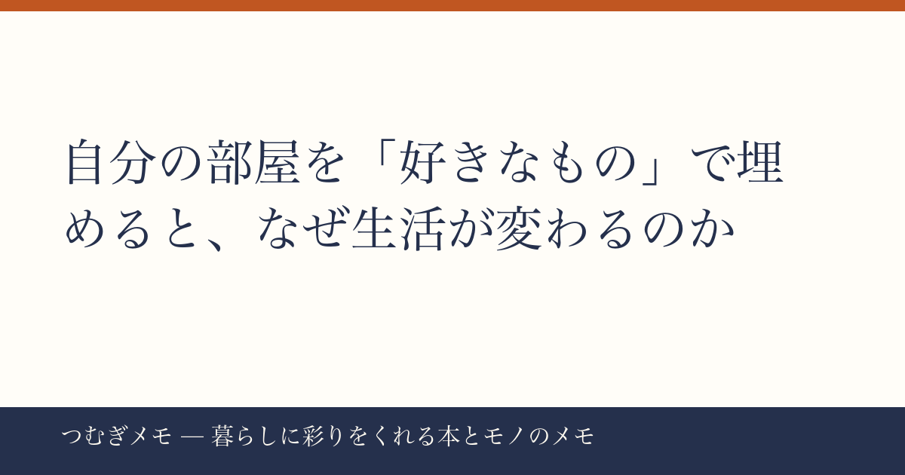

こんにちは、つむぎです。今週のXを見ていて、ひとつの言葉がずっと頭に残っています。
この記事でわかること：「お気に入りのものを部屋に置く」という行為が、なぜ今これほど多くの人に刺さっているのか、その背景と今日すぐ動ける実践をまとめました。
今週の要点
- 「好きな枕・カップ・毛布…自分を見失いそうなときに、元の自分に戻れるように」という投稿がXで2,460いいねを集めた
- 同じ週、「部屋をお気に入りで埋める」文脈と重なる北欧産サバや炭酸水などの"毎日の食卓を整えるもの"が楽天ランキングを席巻した
- 暮らしの「解像度を上げる」行動への関心が、夏の消費行動に明確に現れている
---
今週のXで最も共感を集めたのが、いいね2,460件を獲得したこの投稿です。
> 自分の部屋に「お気に入りの物」で埋め尽くしてください。好きな枕、好きなカップ、好きな毛布、好きな椅子、好きな花、好きなお茶、好きな文房具、好きなぬいぐるみ。自分を見失いそうなときに、元の自分に戻れるように。
数字だけ見れば「2,460いいね」は派手なバズではないかもしれない。でも注目したいのは、リプライやリツイートの内容です。「全部やってる」「これが本当に大事」という共感ではなく、「やりたいのにできていない」「ひとつだけ変えてみる」という"行動宣言"が連鎖しているところが、このポストの本質的な強さだと思っています。
なぜ今これが刺さるのか。
在宅・ハイブリッドワークが当たり前になって久しい現在、部屋は「寝る場所」から「生きる場所」へと役割を拡張しました。外の環境をコントロールするのは難しい。でも部屋の中だけは、自分が主権者でいられる。忙しさや情報の洪水の中で「自分らしさ」を保つための、もっとも身近な処方箋として「好きなものを置く」という行為が機能しているのだと思います。
今日できる実践：まず「ひとつだけ」から始めてください。部屋全体を変える必要はない。毎朝使うマグカップを、本当に好きな一客に替えてみる。その小さな変化が、1日の最初に「自分はこれが好きだ」と確認する儀式になります。
---
今週の楽天ランキングを眺めていると、食まわりの動きが興味深いです。骨取り北欧産さばが1位・10位にダブルランクイン（1位商品はレビュー35,641件・★4.78）、炭酸水48本ケース買いが7位（レビュー16,799件・★4.68）、富士山の天然水がランクインしています。
これ、単なる「安さ」や「セール」だけでは説明がつきません。骨取りさばのレビュー数・評価の高さは、リピーターが厚く積み上げた結果です。炭酸水のケース買いも、「まあいいか」で選ぶ人がする行動ではない。
共通しているのは「毎日ふれるものに少しだけこだわる」という選択です。
高級食材を買うのではなく、手の届く価格帯の中で「本物に近いもの」を選ぶ。これは冒頭のXの投稿が言っていることと、同じ方向を向いています。毎朝の食卓をちょっと好きな食材で整えることも、自分を取り戻す空間づくりのひとつです。
今日できる実践：次に食材を買うとき、「いつも安いから」という理由だけで選ぶのを一度止めて、「これが好きだから」という理由で一品だけ選び直してみてください。さばでも、お茶でも。レビュー数の多い定番品から試すと失敗が少ないです。
---
Xでは今週、一穂ミチさんの『歌うように生きて』への感想投稿も流れました。「泣いた」「切ない」という感情の言葉と同時に「読んでた作品もあるからサッと読み終えた」というコメントが印象的です。好きな作家の本を手元に置いている人は、それを読む行為そのものが「元の自分に戻る儀式」になっている。
「好きな本を部屋に置く」は、お気に入り空間づくりの中でも特に費用対効果が高い手段です。本は場所を取らず、何度でも開ける。背表紙を見るだけで気持ちが整うことも多い。
僕が最近手元に置いていて、「暮らしを整える視点」を与えてくれると感じているのが、住まいと日常道具の関係を丁寧に書いた本のジャンルです。
楽天で『歌うように生きて』を見る / Amazonで『歌うように生きて』を見る
部屋に「好きな本のゾーン」を作ることも、空間づくりの実践として有効です。読み終えた本をしまい込まず、好きな一冊だけ表紙を向けて飾ってみる。それだけで部屋の印象と自分の気分が変わります。
また、インテリアやライフスタイルの雑誌を定期購読する習慣も、「好きな空間のイメージ」を継続的にアップデートするのに役立ちます。(PR) Fujisan.co.jp 雑誌のオンライン書店を見るでは最大70%OFFで定期購読できるので、気になるライフスタイル誌があれば一度チェックしてみてください。
今日できる実践：本棚から「これが好き」と胸を張って言える一冊を取り出して、部屋の目に入る場所に表紙向けで置いてみる。棚に収納し直すのはいつでもできます。
---
Q. 部屋のものを全部お気に入りにしようとすると、お金がかかりすぎませんか？
A. 全部いっぺんに替える必要はまったくありません。今週のXの投稿が「枕・カップ・毛布・椅子・花・お茶・文房具・ぬいぐるみ」と8つも並べているのは、「全部揃えて」ではなく「選択肢はこんなにあるよ」というメッセージです。まず一番毎日ふれるもの、たとえばマグカップ一客（1,000〜2,000円台でも十分良いものがある）から始めるのが現実的です。
Q. 「好きなもの」が何かわからなくなっています。どう探せばいいですか？
A. それ自体が、今週バズった投稿が「自分を見失いそうなとき」という言葉を使った理由だと思います。焦らなくていい。まず「なんとなく捨てられないもの」に注目してください。理由を言語化できなくても長年手元に残っているものは、あなたが好きなものである可能性が高い。そこから「なぜ捨てなかったのか」を考えると、好みの輪郭が見えてきます。
Q. 賃貸で模様替えに限界があります。何から変えるのが効果的ですか？
A. 壁や床を変えられなくても、「手が届く範囲」は全部変えられます。テーブルの上・枕元・洗面台まわり。人が一番長く視線を向ける場所から始めると、変化を感じやすいです。コスト的にもデスクまわりやベッドサイドは小物数点で雰囲気が変わります。
---
「好きなものを置く」という行為は、シンプルに見えて実は深いです。それは消費行動でも整理術でもなく、「自分が何者か」を毎日確認するための空間設計です。今週のXの2,460いいね、楽天の食まわりランキングの顔ぶれ、本への感想の熱量——それぞれが別々のように見えて、全部「暮らしの解像度を上げたい」という同じ欲求を指していると感じます。
ひとつだけ、今日動いてみてください。
なお、このブログ「つむぎメモ」は、AIとの協働で記事を作る実験的なメディアとして運営しています。テーマ選びや分析の視点は僕（つむぎ）が担い、構成と文章生成にAIを活用しています。感想や「こんな話題を取り上げてほしい」というリクエストは、X（@tsumugi_memo15）にぜひ。
📚 目次へ